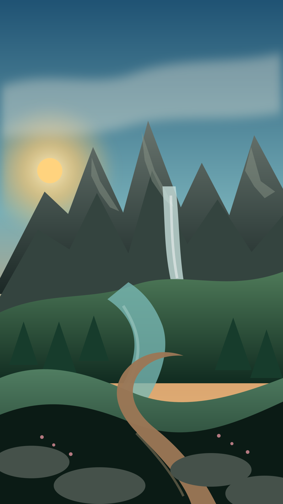
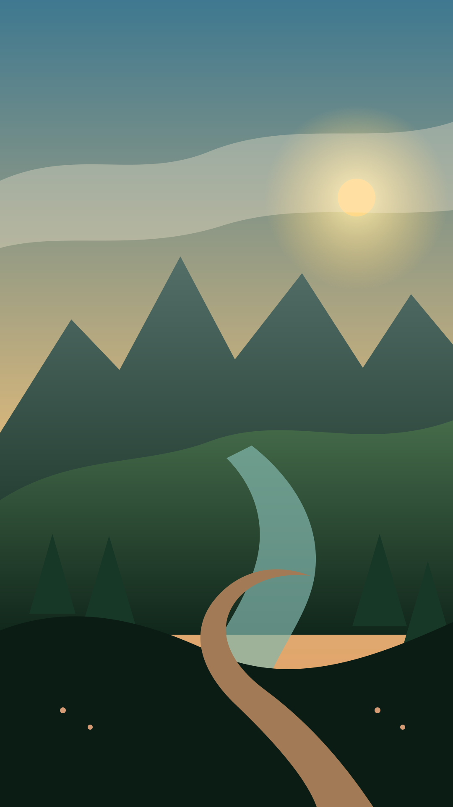
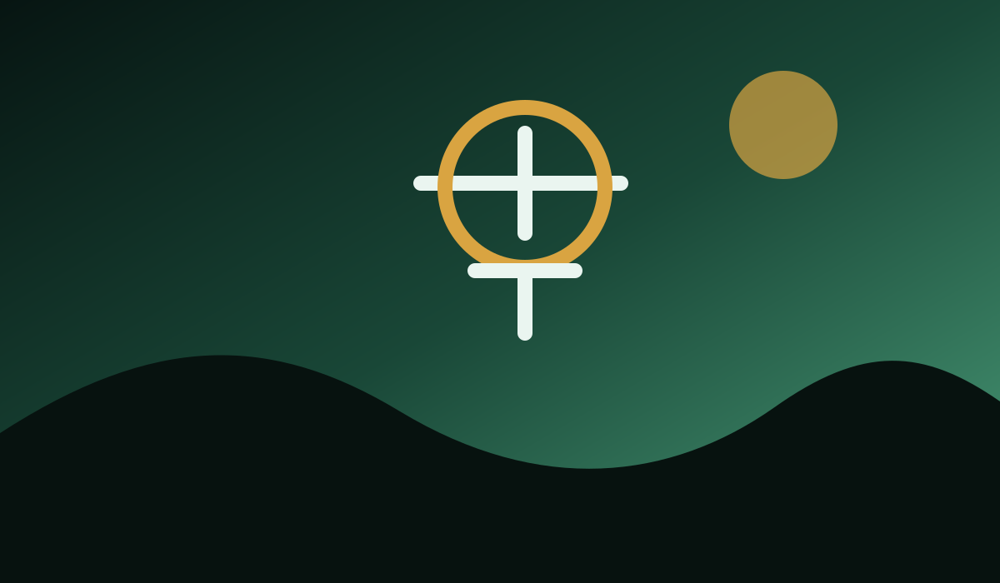

02
Rutas y planificación
Importa GPX, registra recorridos, consulta información territorial y construye una salida alrededor del mapa, no alrededor de una lista de enlaces.
Rutas, mapas, naturaleza y herramientas de seguridad reunidas en una experiencia pensada para salir ahí fuera con mejor información.
España Outdoor
No queremos ser otro catálogo de senderos. España Outdoor une cartografía, planificación, naturaleza y seguridad en una plataforma que prioriza contexto, procedencia de los datos y utilidad real en el terreno.
Ver cómo funciona →Cartografía
Diseñado para que la información territorial sea útil tanto antes de salir como cuando ya estás sobre el terreno.

La arquitectura del proyecto está preparada para PMTiles y proveedores cartográficos desacoplados, con soporte para datos regionales y consumo offline.
Rutas
De una ruta sencilla a una salida que exige preparación, la experiencia está pensada para reducir sorpresas evitables.
Importa GPX, registra recorridos, consulta información territorial y construye una salida alrededor del mapa, no alrededor de una lista de enlaces.
La plataforma está diseñada para trabajar con procedencia, fecha de actualización y nivel de confianza.
Las funciones críticas deben seguir teniendo valor cuando la conectividad deja de ser fiable.
Naturaleza
La web también será una puerta de entrada a contenidos de territorio, fauna, flora y conservación, con una presentación visual propia.




Flora & fauna
La representación de la vida silvestre forma parte del producto como información territorial y de conservación, no como decoración.
Seguridad
La seguridad sigue una jerarquía clara: información, precaución, peligro y emergencia.

El producto contempla SOS, contactos de confianza y Rescue Link como módulos aislados y auditables. Las acciones críticas se presentan con el contexto y las confirmaciones que corresponden a su gravedad.

Comunicación contextualizada con contactos y destinatarios definidos.
Información visible sin confundir una advertencia con una emergencia.
La plataforma
España Outdoor concentra la experiencia operativa en móvil. La web será la capa pública para descubrir el proyecto, consultar contenidos y acceder a servicios digitales cuando estén disponibles.
Próximamente
El siguiente paso es conectar la capa pública con mapas, contenidos territoriales y servicios reales sin introducir datos ficticios ni dependencias innecesarias.
Explora España. Hazlo preparado.